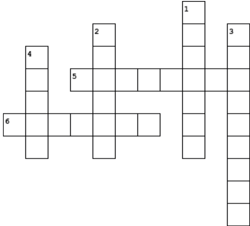
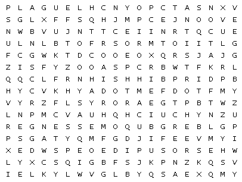

Would you like to have fun maybe test your knowledge about the current affairs or read an exculsive explaination into the algorithm for what ads you see? See all of this when you click 'Read More' !
Would you like to play a crossword? Visit the link called 'CROSSWORD' or play with a pen or paper right on our website?
CROSSWORD

Across
5."Alas, how terrible is wisdom when it brings no profit to the man that's wise!"
6.". . . my son, poor defenseless thing, he never had a chance to kill his father. They destroyed him first. So much for prophecy. It’s neither here nor there"
Down
1."My troubles are mine and I am the only man alive who can sustain them."
2."It is happy news, I think for else his head would not be crowned with sprigs of fruitful laurel."
3."In that your ankles should be witnesses"
4."Were his eyes straight in the head? Was his mind right when he accused me in this fashion?"
Or maybe a wordsearch would suit you more?

Antistrophe Creon Eyes
Brooch Jocasta Messenger
Chorus Noose Oedipus
Down Plague Strophe Tiresias
Finally, maybe the exclusive look into the algorithm for the ads is all you have been looking for. Well stay tuned for an absolutely crazy piece in the perspective of an audience watching Oedipus' story in the form of a play.
By Sumati Gurram
A motif is a recurring structure in a story that shows up several times and has a symbolic importance to the theme. There are multiple motifs shown throughout the story of Oedipus the King. Due to the fact that motifs are shown frequently throughout the text, they aren’t subtle and help build the overall structure of the story. Motifs throughout Oedipus’ journey are sight and blindness, illness and self-harm, and crossroads or choices. There are several smaller motifs that are expressed in this story but these three have the most notable effect.
One of the major motifs in this play is sight and blindness. This motif is shown to emphasize meaning in both a literal and figurative way. Clear vision is used as a metaphor for knowledge which is held superior to anything else. References to eyesight and insight in this play form an important pattern in combination with metaphorical meanings. Oedipus is famed for his clear-sightedness and quick comprehension, but there is irony to this situation when Oedipus finds out that he has been oblivious, and in a way blinded from knowing the truth for many years. At the end of the play, Oedipus is shown tearing his eyes out, this has a significant effect on the story by emphasizing the drastic causes of Oedipus not being able to “see” the truth. Another character in this play is Tiresias. Tiresias is blind, yet he sees farther than others and demonstrates remarkable powers of intellectual penetration. Sight and Blindness are mentioned multiple times throughout the text and have become a motif of this story.
Illness and suicide are mentioned multiple times throughout this story and have become motifs as well. There and multiple deaths throughout Oedipus the King but one of the most memorable is Joacasta’s. Jocasta’s death was due to suicide, she hangs herself in order to flee from the stress she was feeling. Her stress comes from being ashamed of having an intimate relationship with her son Oedipus. Jocasta believes that Oedipus has a misunderstanding and takes her life as a result. Another time self-harm was shown during the play when Oedipus inflicts horrible violence upon himself at the end of the play. As previously mentioned, Oedipus violently removes his eyes putting him through a severe amount of pain. The storyline of Oedipus also revolves around burials, and beliefs of how people should be buried when they pass away. As shown at the end of Oedipus the King, Oedipus cannot remain in Thebes or be buried within its territory. Oedipus’ actions caused him to be looked down upon by the gods and people of Thebes, as a result, he wasn’t able to be buried inside Thebes. Essentially, death and burials go hand in hand. Death and illness was extremely common at this time in the kingdom of Thebes therefore, there were more uses for burials.
The mention of crossroads is what drives Oedipus’ journey. It is the first clue that he needed to figure out that he may have killed Laius, and it continues to reappear throughout the play. The motif of crossroads and choices however has more to do with than just Laius’ death, it is mentioned in other situations as well. The symbolism of crossroads is used to emphasize that Oedipus’ choices are what will shape the entire story. Although, in terms of killing Laius, Oedipus didn’t have a choice, and it caused a domino effect to occur. Oedipus’ fate is something that he had no control over, and as a result, his decision-making only can change the extent of it.
In conclusion, there are multiple motifs throughout the play Oedipus the King and these are just a few of them. Motifs play a significant role in influencing the reader or viewers interpretation of the text.